There are three ways to add a new workspace:
- Create your own workspace from scratch.
- Download a workspace from BRIX Store.
- Import an .e365 file with a workspace.
начало внимание
Only the users included in the Administrators group can create workspaces.
конец внимание
Create a new workspace
- Click the plus icon at the bottom of the left menu on the main page.
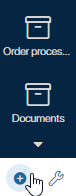
- Select Create. In the window that opens, specify the workspace parameters.
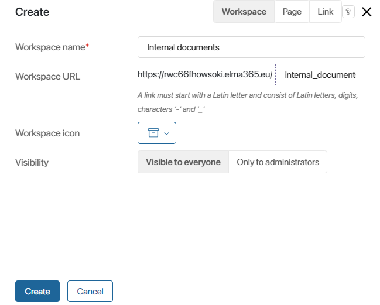
- Workspace name*. Specify the name that will be displayed in the left menu on the main page.
- Workspace URL. The URL is generated automatically basing on the workspace name. The link text can be changed at the creation stage. It is used for quick access to the workspace.
- Workspace icon. Helps users find the workspace in the left menu.
- Visibility. Select which employees should be granted access to the workspace. You can change these settings later and specify groups of employees who can interact with the workspace.
- Visible to everyone. All the system users will be able to see the workspace.
- Only to Administrators. Only the users included in the Administrators group will be able to see the workspace.
- Click Create.
The created workspace will appear in the left menu. . On the opened page, you can fill the workspace by adding apps, a contract, or a report, as well as separators, links, and pages.
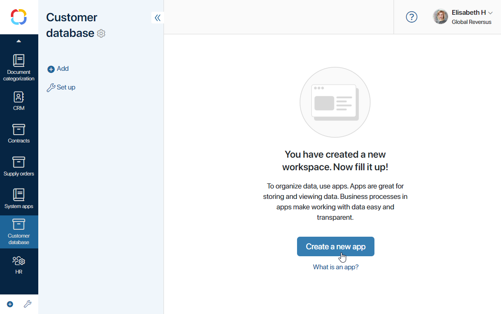
Download a workspace from BRIX Store
You can download a ready-made workspace from the BRIX Store catalog.
- Click the plus icon at the bottom of the left menu on the main page.
- Select Download.
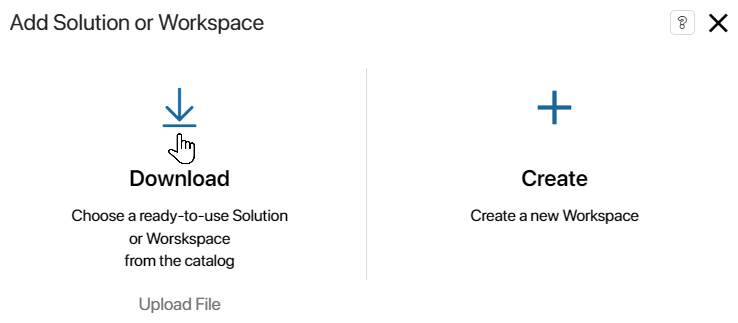
The BRIX Store catalog will open, offering all the available the workspaces.
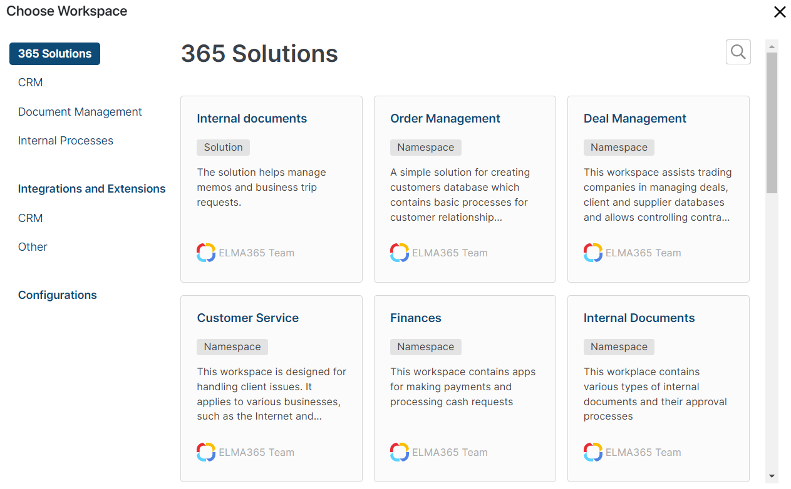
- Click on a workspace to see its description and the list of apps that it includes.
- To upload the workspace to your company, click Install namespace.
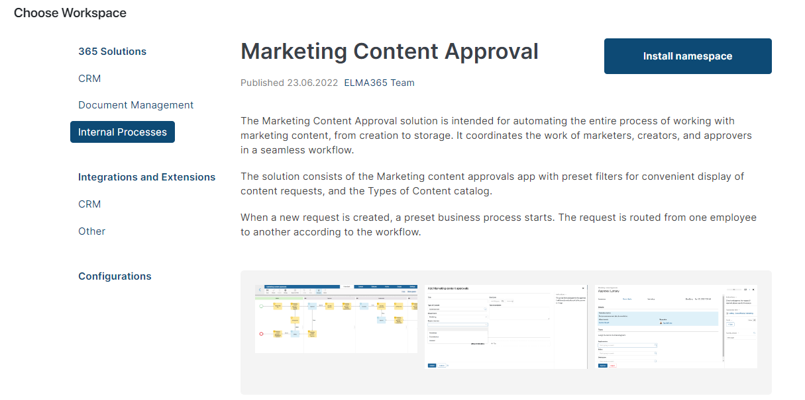
If you import a workspace created or modified in a newer system version (e.g. 2024.4) than your current version (e.g. 2024.1), a warning message appears. The import may fail or the workspace may not work properly because the newer version may have changes that are incompatible with your version. Select whether to cancel or continue the import process.
- In the provided window, edit the data if necessary.
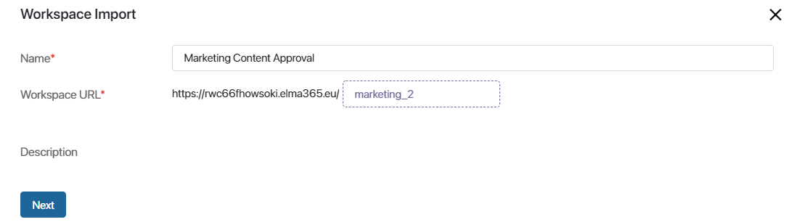
Fill in the following fields:
- Name*. Specify the workspace name which will be displayed in the left menu on the main page. By default, it is the name of the workspace you are downloading.
- Workspace URL*. The URL is generated automatically based on the workspace name. The URL is used for quick access to the workspace.
- Description. This field shows a description if one was added when the workspace was exported to BRIX Store.
- After filling out the form, click Next.
- Configure the initial workspace settings. Add users to groups and choose their roles. These data are used in workspace business processes and access settings. To add an item to a field, click on the magnifying glass icon and select a position or a person from the list.
- Click Install
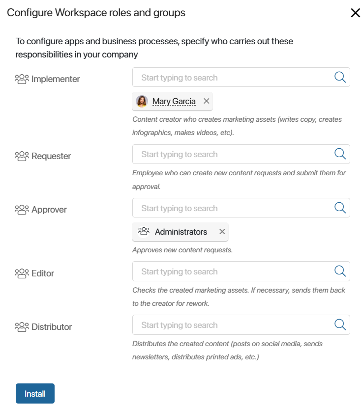
- Once installation is completed, click Go to Workspace.
Import a workspace from an .e365 file
You can import a workspace to a company by uploading an .e365 file. The apps, pages, separators, and business processes included in the workspace, will be imported with it.
- On the main page, in the left menu, click Add Solution or Workspace
- Click Upload file.
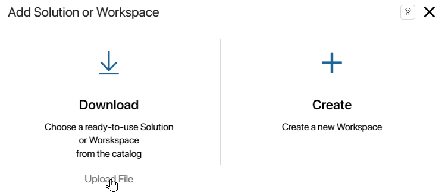
- Upload a .e365 file from your computer or select one from the system files. Click Next.
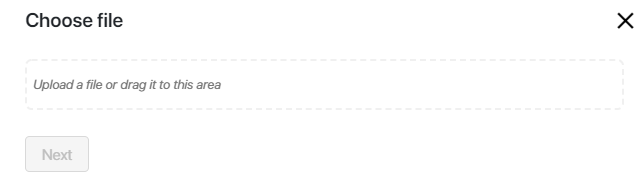
If you import a workspace created or modified in a newer system version (e.g. 2024.4) than your current version (e.g. 2024.1), a warning message appears. The import may fail or the workspace may not work properly because the newer version may have changes that are incompatible with your version. Select whether to cancel or continue the import process.
- In the window that opens, edit the workspace data if necessary.
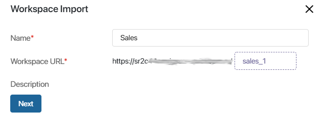
- Name*. The workspace name, displayed in the left menu.
- Workspace URL*. The link for quick access to the workspace.
- Description. This field shows a description if one was added when exporting the .e365 file.
- Click Next.
- Configure the initial workspace settings. Add users to groups and choose their roles. To add an item to a field, click on the magnifying glass icon and select a position or person from the list.
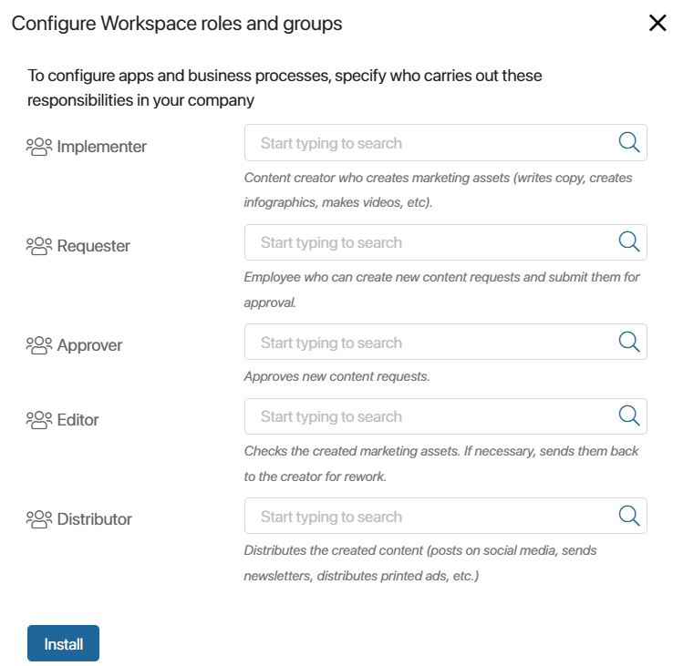
- Click Install.
The imported workspace will be checked for errors. The structures of custom groups and fields are checked, as well as links in the App type fields to existing apps in the workspace, duplicate pages are detected, etc.
If an error is found, you will see an alert. Import will be impossible. It will be impossible to import the app to the company.

If non-critical errors are found, for example, variable inconsistencies in document templates, you will see a warning. You can continue installing the app.
- If there are no errors, click Go to Workspace.
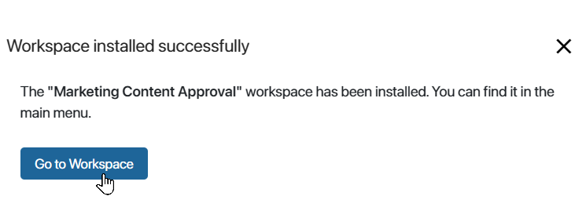
Add items to the workspace menu
Inside a workspace you can create apps, separators, links, and pages. To do this, click the 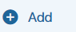 button in the left menu of the workspace and select an item in the opened window.
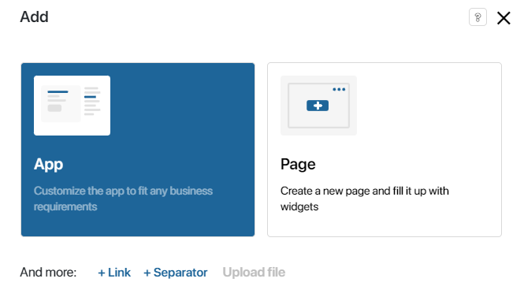
After creating or installing a workspace, you can change its name, describe its features, or select a new icon. To learn more, see Workspace settings.